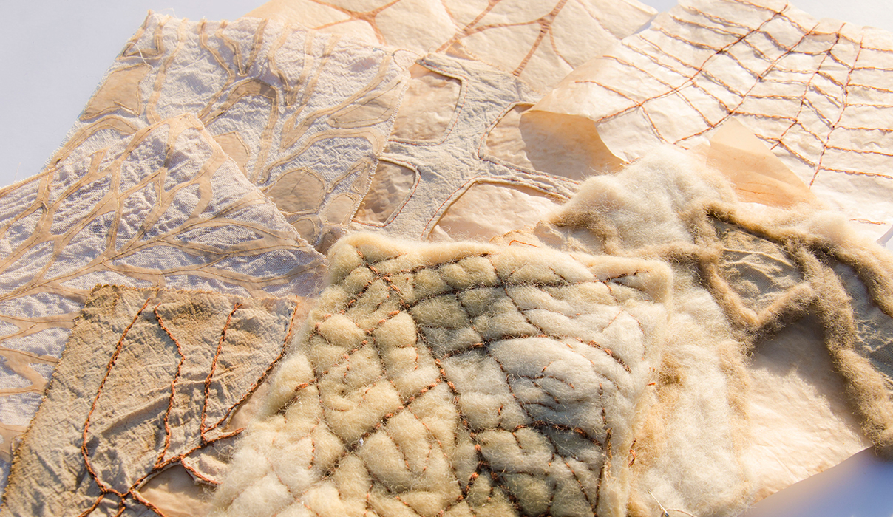

El proyecto, con el aporte en materialidad de Silvio Tinello y Arte en Barrios,
apunta a generar un espacio de cobijo para ser presentado en el marco de la Bienal FADU UBA
y la Noche de los Museos 2019. Se parte de la idea de "acobijar" con un espacio,
en alusión a generar un momento de pausa desde la arquitectura.
Tomando fractales de la naturaleza, se encuentra inspiración en el orden que proponen
las estructuras vegetales, que a su vez están presentes desde la materialidad: se utiliza celulosa bacteriana - kombucha -
en combinación con lienzo y fieltro, todos ellos pensados desde lo biodegradable y la armonía con el medio ambiente.
Explorando la idea de un capullo que se abre y se cierra, el espacio se piensa semiesférico.